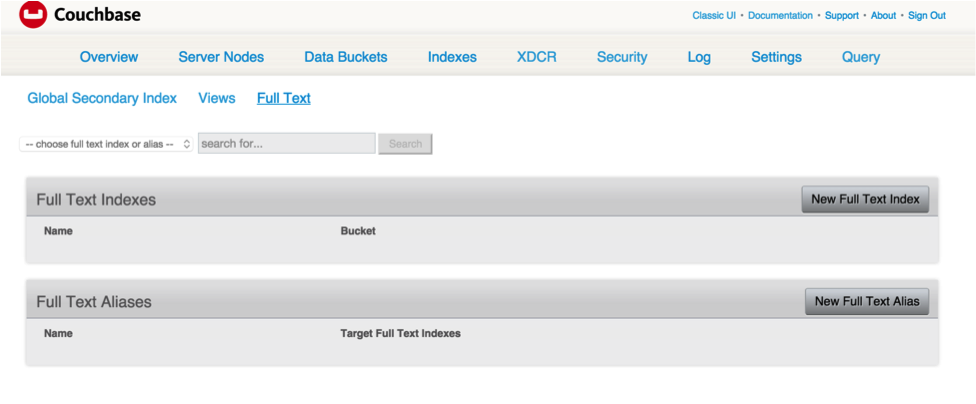
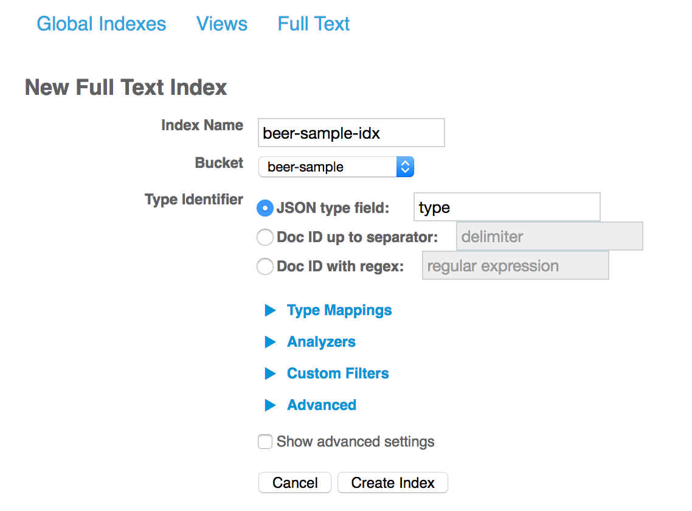
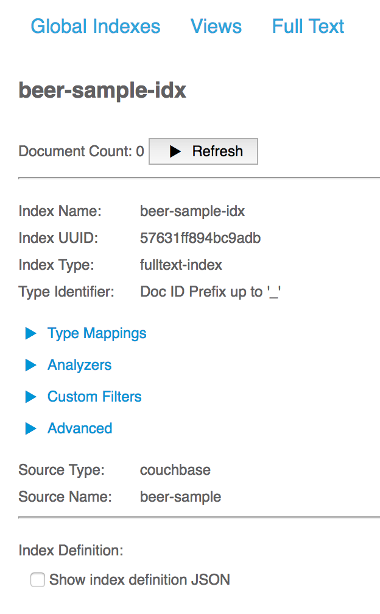

Text Indexing
In order to perform full text queries, you must first create a full text index. Unlike N1QL or other SQL systems, you can’t run full text searches directly on data without a full text index: full text search has nothing like a table scan that can inspect documents outside the index.
The process of creating an index is called index mapping, in which you specify how you want Couchbase Server to map the different fields in your JSON documents to elements in the full text index.
You typically want a different index mapping for each type of document you want to search.
For example, if you’re using the Couchbase beer-sample bucket, you might choose to map documents of type beer one way and documents of type brewery another.
An index can contain information from one bucket only. Your user must have appropriate access permissions for the bucket they want to search. You can enable searches across buckets by using an index alias.
To create an index, go to the Couchbase Server web console > Indexes tab > Full Text.
Your URL might look something like this, if you replace localhost with the name of your server:
http://localhost:8091/ui/index.html#/fts_list
From here, you can create, edit, clone, and delete index definitions.
If you see a message saying "Full Text not enabled on this node," access the web console on another node where the full text service is enabled.
To create an index in the web console, using your web browser:
-
Navigate to the Indexes tab > Full Text.
-
Click on the New Full Text Index button.
To edit an index definition in the web console, using your web browser:
-
Navigate to the Indexes tab > Full Text.
-
This page displays a list of full text indexes that you had previously defined, , if any.
Each listed index, if any, has buttons for the following operations:
-
The index edit button allows you to update an index definition. Updating the index definition causes it to be rebuilt.
-
the index clone button allows you to copy an index definition.
-
the index delete button allows you to delete an index definition.
When you click on the index delete button, you will have a chance to first confirm the deletion operation. Deleting an index, importantly, is a permanent operation.
Index Mapping
The simplest way to create an index is to use the default index mapping with no further customization. This is what you did in the Executing Your First Full Text Query section. Default index mapping refers to the index mapping that Couchbase Server uses for JSON documents that don’t match a more specific document mapping based on document type. This example relies on dynamic mapping, explained later, to decide how to index the individual fields in the documents.
| Using the default index mapping with dynamic mapping is a good way to ensure that full text search is working properly on a small set of data, but it’s not very selective so it tends to write a lot of information into the index. For this reason, default index mapping may be slow or result in high load if used on a production-sized dataset. |
-
Click the button New Full Text Index.
 -
Give your index a name like "
beer-sample-idx" and select the bucket you want to index from the drop-down list. -
Starting version 4.6, you can create custom index mappings by document type when the type is specified in the document key. FTS uses the type identifier that you specify to determine where to find the type of each document. The type mapping then uses the value of type identifier for each document to determine which index mapping rules to apply. Select one of the three options for type identifier: "JSON type field", "Doc ID up to separator", and "Doc ID with regex".
-
JSON type field: Specify the field in the JSON document whose value determines the type of the document. Defaults to "type".
-
Doc ID up to separator: The type identifier is the prefix of the document key, up to but not including the given character.
-
Doc ID with regex: For advanced users, you can specify a regular expression that matches the type identifier.
For example, the Doc ID up to the first underscore is considered the type identifier, so beer name, brewery name, and so on could be specified as type mappings.
+ image::fts-create-index-4.png[,300]
-
-
If you click on "Type Mappings," you will only see one type listed, which is "
default." -
Click the "Create Index" button. You will then see a screen that shows you how many documents are in your index and the percentage complete.
 -
Click on the Full Text link again to search the index you just created.
-
Your search shows the list of document IDs that contain the best matches for whatever search you ran, in order of score, with the highest scoring document listed first.
Custom Mapping
There are many additional controls that can be used to build indexes on your documents just the way you want them. These can be found under Indexes > Full Text > New or Edit Full Text Index buttons.
Document mapping works as follows:
-
Specify the type of the document you want to include in your index. You can include more than one type of document in a single index but you can only index documents in a single bucket.
-
For each type of document, you specify how to index its fields and embedded structures.
-
The term
fieldrefers to a name value pair in JSON where the value is simple (i.e. not an object). -
Use a child mapping to index embedded objects, i.e. name-value pairs where the value is of type object. You can add field mappings as in step 3 to describe how the name-value pairs in the embedded object should be indexed.
-
To index arrays, use fields for arrays of simple values and use a child mapping for arrays of objects. In other words, you design your mapping so that you essentially ignore the array and FTS "just works" even though there are multiple values. For example, to index the following document containing an array, add a field of type
textforpachyderms. Queries work just like any other field. If included in_all, a query forrhinocerosmatches this document, or you can scope to the field using the normal field scoping syntax:pachyderms:rhinoceros.{ "pachyderms": ["hippopotamus", "rhinoceros", "elephant"] }
Type Mappings
Couchbase Server indexes JSON documents differently depending on the type of the JSON document. For example, you can create a full text index that only includes documents of type="brewery," and you can specify exactly how you want the documents mapped. To do this, click Add Type Mapping and enter a type name that matches the type attribute of the JSON document you want to index.
There is also a special type mapping for the Default Type. The default type mapping is created for every index automatically and is used for any document whose type does not match another type mapping or that doesn’t have a type attribute.
| You must disable the default mapping if you only want documents of the types that you specify to be in the index. If default mapping is enabled, Couchbase Server will use it to include all the documents in your index that don’t match another type mapping, which may or may not be what you want. |
Each type mapping in an index definition can be enabled or disabled. Disabling a type mapping can be used to ignore documents of a certain type. For example, if you want to index all documents in the beer-sample bucket except "breweries" you could simply create a type mapping for breweries and then check disabled (assuming the default mapping is also disabled).
You can also specify an analyzer to use for a type mapping. This defaults to inheriting the Default Analyzer specified in "Advanced".
Field Mapping
For any type mapping, you can insert a child field to index the values in your JSON document with more control about what appears in the index and how.
The word "field" in index mapping refers to a name-value pair in JSON whose value is a simple type: string, number, true, false, or null.
These child fields refer to name-value pairs that are directly under an object.
In the brewery sample below, name, city, and description are all fields.
You can index the description field of every document in the beer-sample bucket, you can create an index, hover over the default index, click on the plus that appears, and select "Insert child field".
Because both beers and breweries have a description field, this default mapping will end up with every document in it.
{
"name": "21st Amendment Brewery Cafe",
"city": "San Francisco",
...
"description": "The 21st Amendment Brewery offers a variety of award winning house made brews and American grilled cuisine in a comfortable loft like setting. Join us before and after Giants baseball games in our outdoor beer garden. A great location for functions and parties in our semi-private Brewers Loft. See you soon at the 21A!",
"address": [
"563 Second Street"
],
"geo": {
"accuracy": "ROOFTOP",
"lat": 37.7825,
"lon": -122.393
}
}There are four values and four checkboxes you can specify when you insert a child field.
-
field: The name of name-value pair in the JSON document. -
type: Defaults to text, but other possible values are object, number, datetime, and disabled.Type object is not supported in Developer Preview and will cause an index mapping to fail. -
searchable as: You can change the name that is written into the index, so if a user limits their search to a specific field they would use this value instead of the actual name of the field in the JSON. For example, if we mapped the fielddescription"searchable as"info, instead of typing "description:semi-private", users would instead search for "info:semi-private". -
analyzer: The analyzer to use for this specific field.
In addition, there are four checkboxes:
-
index: If unchecked, fields that match this will not be indexed. If the store checkbox is checked, they will still be stored.
-
store: Normally, only the document IDs are written to the index. If this is checked, the document contents are also written to the index. This enables highlighting and result snippets but generally results in larger indexes that are slower to build. Since gets and multi-gets are quite fast, usually users don’t need to store the additional information in the index.
-
Include in _all field: If this is checked, the text in this field will be searchable in query strings without prefixing the field name. If unchecked, the query must include this prefix, for example, "description:modern."
-
include term vectors: Term vectors are the locations of terms in a particular field. Some functionality, such as snippets, highlighting, and phrase search, requires term vectors and can’t be used without them. Not storing term vectors results in smaller indexes and faster index build times.
In this example, you would create the mapping like this:
field: description
type: text
searchable as: description (automatically filled in)
analyzer: inheritCheck "store" so that all four checkboxes are checked. This makes it easier to test and debug your new index because search results will include snippets with the search terms highlighted. The downside of storing the information is the extra size and time it takes to build, but these should be acceptable in this case.
Field is the name of the name-value pair in the JSON.
In our example, the description property is at the top level but if you need to map name-value pairs that are embedded in complex structures, you need to use a child mapping instead.
Insert Child Mapping
Child Mappings are similar to field mappings, but instead of indexing simple values, they enable you to index embedded structures in a JSON document. Use a child mapping when the value of a name-value pair is an object.
For example, consider the brewery document in the beer sample bucket. This document contains an embedded object called "geo" that has three fields: accuracy, lat, and lon.
"geo": {
"accuracy": "ROOFTOP",
"lat": 37.7825,
"lon": -122.393
}To create an index with an object mapping for the geo structure using the Web Console, do the following:
-
Create a type mapping for breweries.
-
Insert a child mapping for the attribute "
geo". -
In the "
geo structure", insert a child field for "accuracy". -
Insert child fields for "
lat" and "lon" and set them to typenumber. -
In a search on your newly created index, you can search the accuracy field using a dot syntax: "
geo.accuracy:rooftop". -
You can also do range searches on the geo fields: "
geo.accuracy:rooftop +geo.lat:>37 +geo.lon:>141".
The index definition you created will look like the example below. You can create the same index definition with object mappings using the REST API:
{
"type": "fulltext-index",
"name": "beer-idx",
"uuid": "af4c073428d51ed5",
"sourceType": "couchbase",
"sourceName": "beer-sample",
"sourceUUID": "a6e631d6c59692d8a8e4280615afd727",
"planParams": {
"maxPartitionsPerPIndex": 32,
"numReplicas": 0,
"hierarchyRules": null,
"nodePlanParams": null,
"pindexWeights": null,
"planFrozen": false
},
"params": {
"mapping": {
"analysis": {
"analyzers": {},
"char_filters": {},
"token_filters": {},
"token_maps": {},
"tokenizers": {}
},
"byte_array_converter": "json",
"default_analyzer": "standard",
"default_datetime_parser": "dateTimeOptional",
"default_field": "_all",
"default_mapping": {
"display_order": "1",
"dynamic": true,
"enabled": false,
"fields": [],
"properties": {}
},
"default_type": "_default",
"type_field": "type",
"types": {
"brewery": {
"display_order": "0",
"dynamic": false,
"enabled": true,
"fields": [],
"properties": {
"geo": {
"display_order": "0",
"dynamic": true,
"enabled": true,
"fields": [],
"properties": {
"accuracy": {
"dynamic": false,
"enabled": true,
"fields": [
{
"analyzer": "",
"date_format": null,
"display_order": "2",
"include_in_all": false,
"include_term_vectors": true,
"index": true,
"name": "accuracy",
"store": true,
"type": "text"
}
],
"properties": {}
},
"lat": {
"dynamic": false,
"enabled": true,
"fields": [
{
"analyzer": "",
"date_format": null,
"display_order": "1",
"include_in_all": true,
"include_term_vectors": true,
"index": true,
"name": "lat",
"store": true,
"type": "number"
}
],
"properties": {}
},
"lon": {
"dynamic": false,
"enabled": true,
"fields": [
{
"analyzer": "",
"date_format": null,
"display_order": "0",
"include_in_all": true,
"include_term_vectors": true,
"index": true,
"name": "lon",
"store": true,
"type": "number"
}
],
"properties": {}
}
}
}
}
}
}
},
"store": {
"kvStoreName": "forestdb"
}
},
"sourceParams": {
"authPassword": "",
"authSaslPassword": "",
"authSaslUser": "",
"authUser": "beer-sample",
"clusterManagerBackoffFactor": 0,
"clusterManagerSleepInitMS": 0,
"clusterManagerSleepMaxMS": 2000,
"dataManagerBackoffFactor": 0,
"dataManagerSleepInitMS": 0,
"dataManagerSleepMaxMS": 2000,
"feedBufferAckThreshold": 0,
"feedBufferSizeBytes": 0
}
}Advanced Index Settings
Type field
By default, Couchbase Server will look for an attribute called "type" in your document and will use that for type mappings. You can change the name of the "type" field by clicking on the "Advanced" options and changing the value of the "Type Field".
Default Type
Documents that match the default type mapping rules are written to the index as being of this type.
The field defaults to "_default", which you can change to avoid conflicts if "_default" is a valid type field value in your JSON documents.
Default Analyzer
This analyzer is used by default when creating an index, if no other analyzer is specified. When you define your index mapping, you can override this value in a number of places, for example, when you create type mappings or field mappings.
Default Date/Time Parser
The name of a Date/Time parser that will be used to parse a date stored as a string.
| Full text search and Bleve expect dates to be in the format specified by RFC-3339, which is a specific profile of ISO-8601 that is more restrictive. |
Default Field
The default field is searched when a user query does not limit the scope of a search to a particular field.
This is highly convenient because most of the time you want a user to be able to search for a term wherever it shows up in the index.
For example, if you create a text index of breweries, as long as terms are included in the _all field, you can query "La Jolla" and find it without specifying "name:la jolla" or "city:la jolla".
You would only need to change the name of this value if your JSON documents already include a field called "_all".
Index Aliases
An index alias is a special "virtual index" that points to other, real full text indexes.
Similar to a symbolic link in a file system, an index alias allows a naming level of indirection, so that applications can refer to a stable name (the alias' name) while administrators can dynamically re-target or re-point the index alias to different, real indexes. This can be useful for applications that are in production. For example, say you build an index my-index. You then build my-index-alias and point it to my-index. Your production application can search my-index-alias until you need to adjust the index, perhaps to change the index mapping or the analyzer. Any such change will require the index to be rebuilt, which would mean the current index will be out of commission. Instead, you can clone the index and give it a new name, like my-better-index. Once this index has had the time to build, you can test it before putting it into production. If you decide it’s ready, you then modify the definition of my-index-alias to remove my-index and instead point to my-better-index. By using an alias like this, the switch to my-better-index will be instantaneous and the index will already be fully ready to use.
Similar to an email list alias, an index alias in FTS can also "fan-out" and refer to multiple, real indexes. Aliases can also refer to other aliases. A query on an index alias will be scatter-gathered by FTS to all of the actual, real indexes and FTS will provide merged results from those scatter-gathered queries.